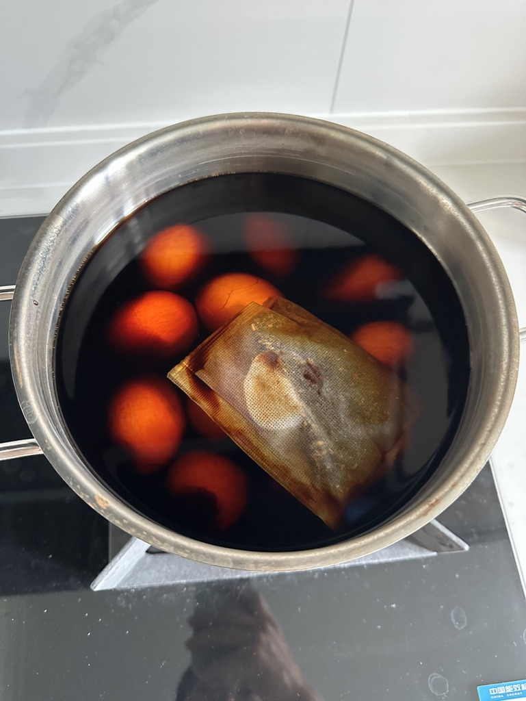

昨天周五，因为家人都没在北京，所以晚上在公司吃了份轻食才走的。
众所周知，轻食吃完后没有任何满足感，而且为了控制体重我已经连续吃了一周轻食，加上白天因为家里的一些糟心事心情很差，晚上到家的时候又在楼下的街边烤串吃了个宵夜。
串儿有点咸，想到家里冰箱有可乐，撸串儿时没有买喝的，到家后喝了一罐可乐，又看了会美剧。因为是周五总觉得生活意犹未尽，躺下后又开始刷小红书，被算法支配到了11点半。
放下手机读了会《回忆爱玛侬》，读完了其中写的很压抑的《彷徨的命运》那一章后已经过0点了。
以上这些作死操作，再加上今天白天的午后，感觉很冷想喝点热乎的，于是喝了一杯瑞幸的热拿铁（早上已经喝过了一杯美式），导致久久无法入睡，翻来覆去、来回上了几次厕所之后，放弃了自然入睡的打算，吃了一片艾司唑仑睡去了。
第二天早上醒来已经将近九点，本来按照前两天的计划是周六一早开车回老家，但因为一些（长辈上的）家庭矛盾取消了这个计划，窝在被窝里刷手机。
拉开窗帘看了一眼，差点晃瞎眼镜。
这么好的天气不能虚度，刚好前几天听了一期《圆桌派》，聊的是关于「菜市场」的主题，而且中间提到了北京的新源里菜市场，我本人对吃非常感兴趣，也喜欢做菜和逛菜市场，所以打算今天也去菜市场逛逛。
查了下去新源里菜市场的路况很堵，又在小红书搜了下北京其他的有名菜市场，发现排名靠前的有个叫百姓菜篮子的菜市场，在百子湾，离我不远，开车只要20多分钟。
为了今天早饭也为了下周有的吃，起床后煮了锅鸡蛋，放上调料腌制好后，又配着吃了个面包，看了一集《我们的生活》后准备出门，在我起床后收拾的过程中就开始一阵一阵的下雨，所以出门时就考虑是作为休闲骑车过去还是开车过去。

考虑到我的车已经一周多没动过了，所以最后还是决定开车过去，就当溜溜车了。最终看来这个决定非常明智。
出门时天阴阴的，很凉爽，伴随着播放我最喜欢的音乐心情也很好。


开到一半的时候，天气突然大变，下起了瓢泼大雨，很庆幸自己选择了开车。

开到地点后雨势也减小很多，百姓菜篮子门脸不大，但进去后别有乾坤，是个极长极长的通道，中间、两边挤满了商家，与其说是个菜市场，不如说是个百货市场，里边卖什么的都有。


这个菜市场太棒了，但因为我的主要目的是逛，并不是买买买，新家这边装备也不齐全，即便买也只能买些好处理的，最后我买了一斤多蛏子、一斤多白蛤准备到家后白灼，又花1块钱买了根葱和一小块姜。
还买了几个巨大的桃子，夏天我最喜欢吃的两样水果是西瓜和桃子，路过一个零食小摊，混着买了些小零食，其中的香葱鸡片小饼干是我的童年记忆，虽然小时候吃顶过，现在还是喜欢吃。

最后出门前又买了个肉蛋堡，香迷糊了。


虽然买的不多，但还是庆幸自己开车来了，如果没有车我肯定拿不了这些东西，感谢我的小车车。
到家后把海鲜用白灼的手法处理了一下，真肥啊，在下吧台上吃着海鲜喝着小酒看着小雨很惬意。
大家周末愉快呀。